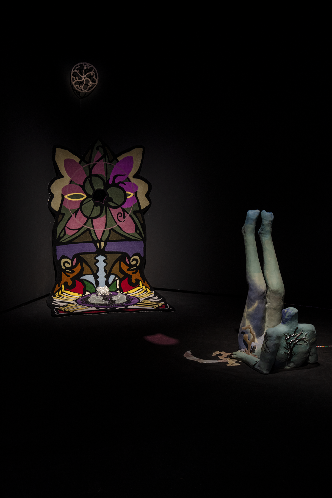
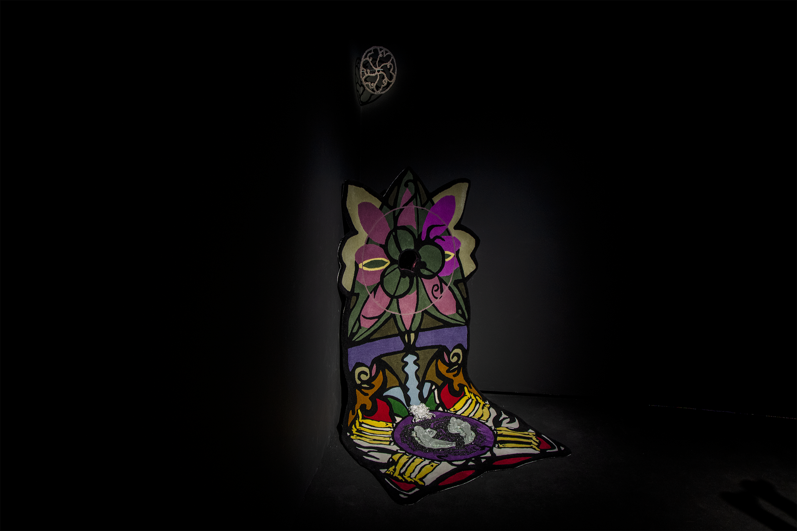
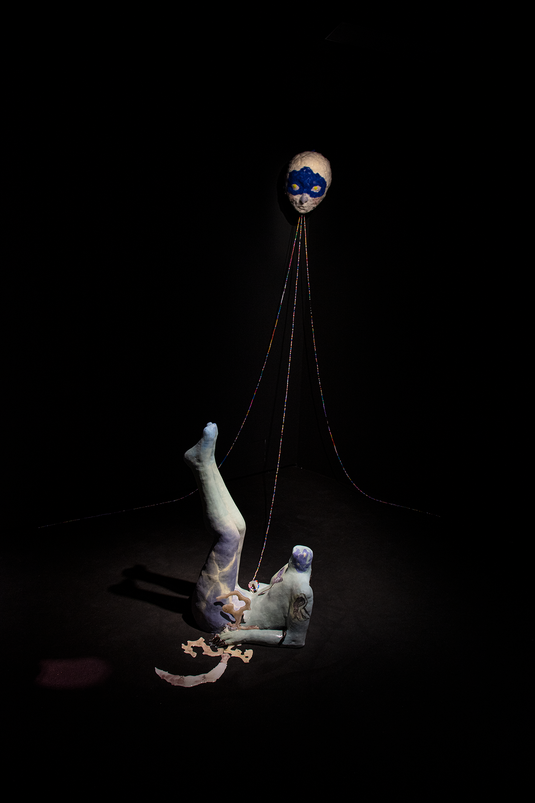
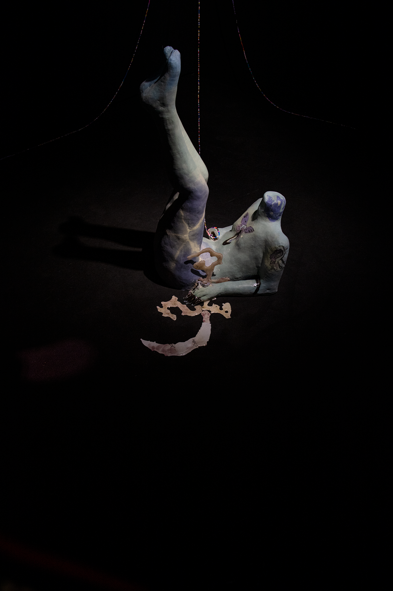
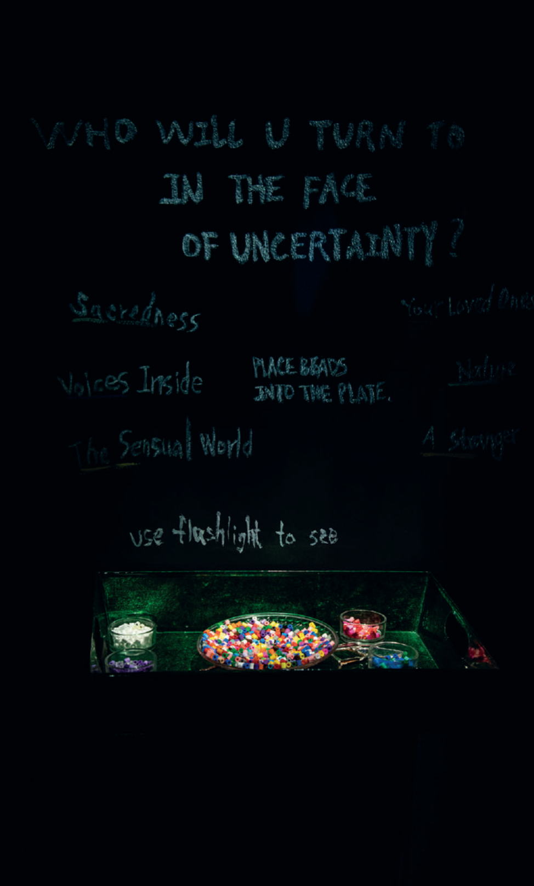

Who Will You Turn To?, 2025
Glazed ceramics, glass, wool felting on polyurethane, acrylic beads
Interactive installation · Various dimensions · Sound, 2 min 37 sec
Poem / audio recording



In Order to Become a Child Again, 2025
Hand-tufted wool textile, cast glass, pâte de verre, atelier glass, aluminum, stone
Installation · Various dimensions
The installations transform traces of the past into tangible forms—sculptures, sound work of poetry, and participatory rituals—inviting viewers to engage with the body, objects, and spaces as sites of remembrance and reflection. The series addresses how to access fragmented memories across feminist, queer, and postcolonial frameworks.
Through these works, I explore the legacies of migration, trauma, and cultural memory, while giving form to stories that cannot be fully spoken, allowing absence and loss to inhabit space and matter.